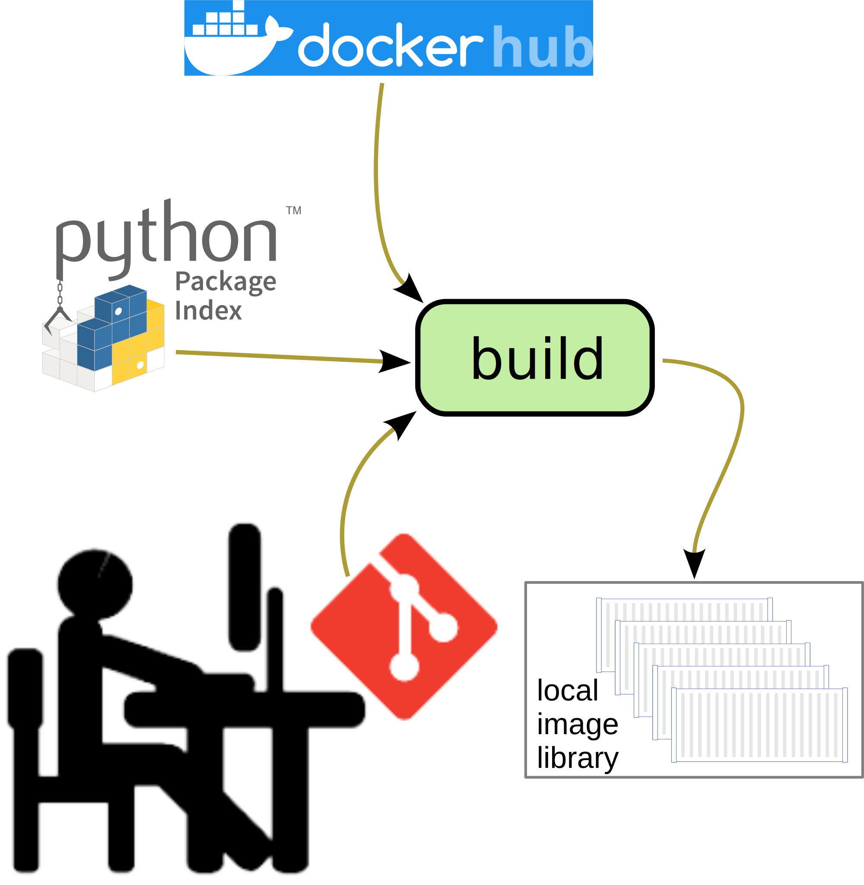
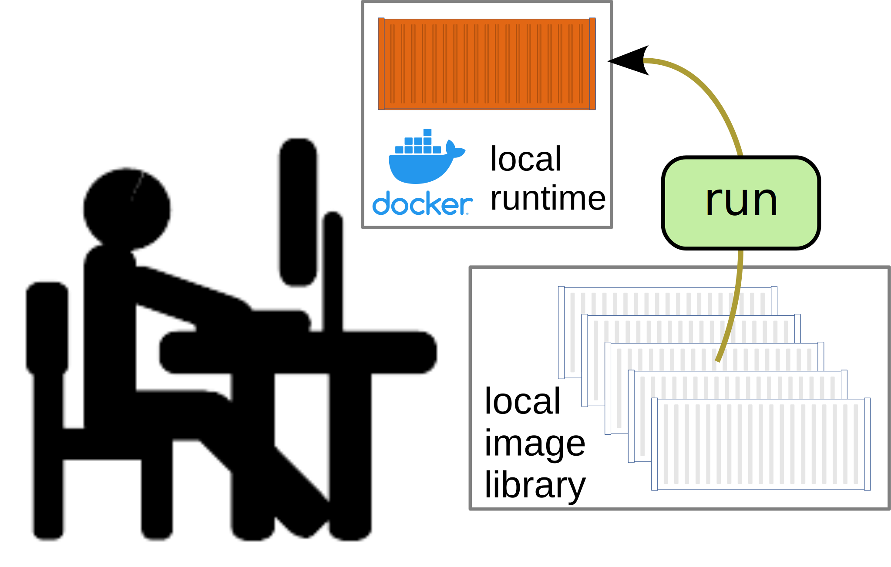
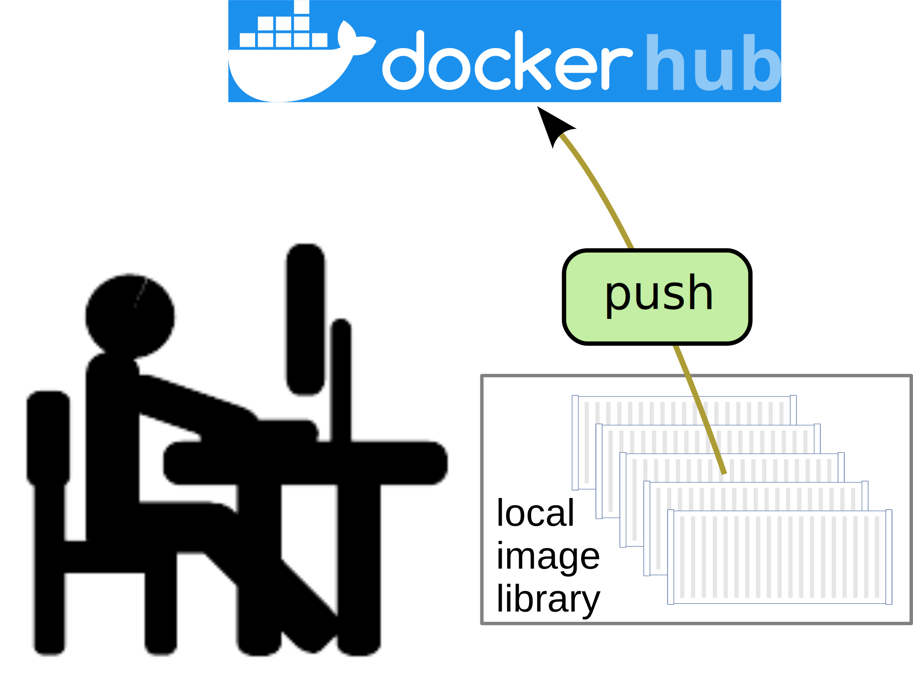

Workflows
Containerization involves managing a tree of files with code and data that you want include in the container, a build script specifying how to build the container image, and any other container-related configuration or script files. You should therefore pick a suitable Git-based workflow for managing these files and combine it with workflows for managing containers such as the ones discussed below.
Tip
You almost always will want to have a local container runtime installed so that you can test and debug containers locally. Docker provides one such runtime.
Build an image
{kind=link}
Building a container image involves pulling a base image from an container registry such as Docker Hub, installing libraries and packages on top, and adding your code and data (preferably managed via Git). A build script specifies this procedure. The built image by default lands in your local image library.
Test and debug
{kind=link}
To test and debug a container, you run an image (instantiate a container from an image and start it) or restart a stopped container. By running the container on a local runtime, you have better access to it for purposes of testing and debugging. Interacting with and inspecting the running container can involve means such as:
A bind mount.
Invoking sub commands of the
dockercommand line tool.For example the
docker attachsub command.
Pointing your web browser at a port through which the container is exposed.
A Visual Studio Code extension for container access.
{kind=link}
Publish an image
{kind=link}
By publishing a container image, you enable others to run your software in a self-contained format: no compilation or installation is required. Another reason for publishing an image is to provide a base image for others to build on top of.
You can publish by pushing your image to a public repo on Docker Hub or some other publicly available container registry.